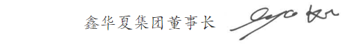
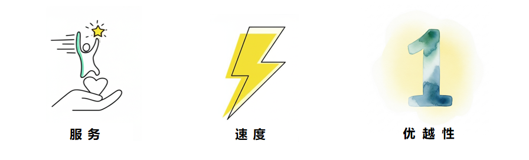

自创立以来，鑫华夏集团始终站在工业前沿，成长为一家值得信赖的EPC综合服务企业。
我们不忘初心，始终以技术为基础，在众多项目中不断挑战自我，稳步前行。
通过持续改进、继往开来，我们不断增强全球竞争力，正在成为客户可信赖、社会尊敬的EPC引领者。
我们将继续以诚信立业，以责任铸魂，为客户、员工与社会创造更大价值。
衷心感谢您的关注与支持!

企业愿景

传承初心，锐意进取，迈向国际EPC领导者！